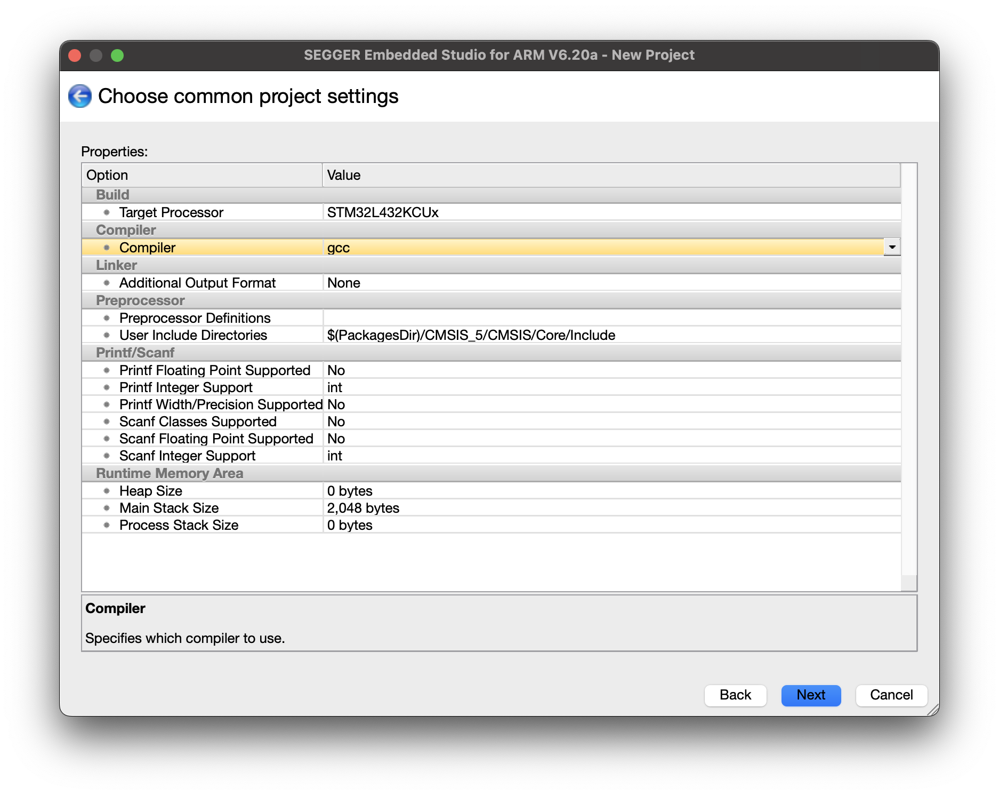

SEGGER Embedded Studio Setup
Create New Test Project
If you have not yet installed SEGGER Embedded Studio, first see and follow the instructions in Appendix A: Install SEGGER Embedded Studio & Support Packages.
In this section we will use the SEGGER Embedded Studio to create, build, and upload a simple program to blink the LED on your board.
SEGGER studio development projects are grouped into projects and solutions.
- A project contains and organizes everything you need to create a single application or a library.
- A solution is a collection of projects and configurations.
In most cases, you will be designing a single application and the most straightforward organization is to have a single project within a solution.
To start, create a new project by navigating to “File > New Project”. Select create the project in a new solution.
Scroll down and select “A C/C++ executable for STMicroelectronics STM32L4xx” and name the project “blink_demo.”

Select the proper Target processor (STM32L432KCUx).


On the next page, leave all the options checked and allow both configurations on the next page. Click finish to close the wizard.
If you click the arrows to expand the tree of files in the project you will see a main.c file in the source directory and the supporting basic system files and device drivers.
Next, open up main.c and edit it to include the following code. This code toggles the GPIO pin PB3 on and off, blinking the on-board LED. A for loop that counts to a set value using a dummy variable serves to create a simple delay so that the LED blinks slow enough to easily see it.
/*********************************************************************
* SEGGER Microcontroller GmbH *
* The Embedded Experts *
**********************************************************************
-------------------------- END-OF-HEADER -----------------------------
File : main.c
Purpose : LED blink demo
*/
#include <stm32l432xx.h>
#include <stdint.h>
int main(void) {
// Initialization code
RCC->AHB2ENR |= RCC_AHB2ENR_GPIOBEN;
GPIOB->MODER |= GPIO_MODER_MODE3_0;
GPIOB->MODER &= ~GPIO_MODER_MODE3_1;
while(1) {
for(volatile int i = 0; i < 20000; i++);
GPIOB->ODR ^= (1 << 3);
}
}
/*************************** End of file ****************************/After writing the code, build it by running “Build blink_led” from the Build menu or by using the keyboard shortcut F7. If you get any error messages, use the information printed in the output window to locate the error (double clicking on the error message should bring you to the appropriate section of code) and correct the bug. Note that frequently the line previous to the line identified as containing the bug is where the actual problem lies. After successfully resolving any compilation errors you are ready to move on to uploading and debugging your code.
Uploading the Code
To upload your compiled code, use the Target menu and select “Connect J-Link”. If you get any errors check that your board is properly connected. If you are still having issues, contact the instructor as you might need to upgrade the firmware on your board from ST-LINK to J-Link.
After connecting the J-Link, download the compiled code to the board by selecting Target > Download blink_led from the menu. If everything is working correctly, you should see a message in the Output window that the download was successful and the green user LED (LD3) on your Nucleo board should start blinking.
Congratulations, you have successfully built your first project on your microcontroller!
Appendix A: Install SEGGER Embedded Studio and Support Packages
Download Segger Embedded Studio. The current version as of this writing is 7.32. There are versions of the program available for Windows, Linux, and Mac. Make sure to choose the appropriate installer for your computer hardware. You may find the SEGGER Embedded Studio User Guide helpful for answering questions about how to navigate the program.
You will also need to download and install the J-Link Drivers for your operating system from here.
Before you create your project, you will need to download a few support packages for the CPU on our board. Download the following support packages in SEGGER Embedded Studio (tick the option in package manager gear icon in top right to show all downloaded packages, not just those that aren’t installed yet)
- STM32L4xx CPU Support Package
- CMSIS 5 CMSIS-CORE Support Package
- CMSIS 5 Documentation Package
Appendix B: ST-LINK to J-Link Firmware Upgrade
Your STM32 Nucleo boards come with an on-board debugger ST-LINK debugger. This debugger is not compatible out of the box with the SEGGER tools and the firmware needs to be updated to connect to SEGGER Embedded Studio. The boards in your kits should have already been updated so that they are ready to go, but if for some reason your computer is not recognizing the board, you may need to download and perform the firmware upgrade yourself. Instructions on how to do so can be found here. Note that this upgrade process can only be completed on Windows.